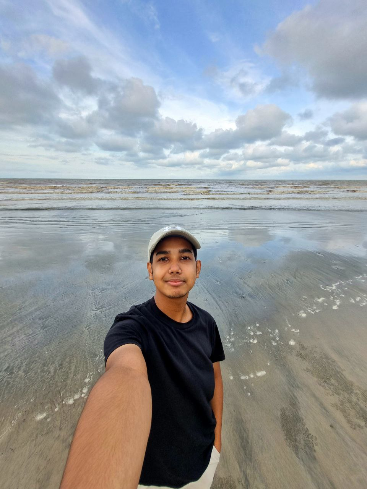

Yoe
Zoro
Mekti
Mekra
Watch Me
-
I like Kuantan because
Kuantan the best place ever, Teluk Cempedak, Sungai Pandan Waterfall, Chini Lake, Berkelah Falls, and other popular attractions in Kuantan. Bukit Panorama is the best spot. For hiking lover must visit here, it is because Bukit Panorama is a hill in Sungai Lembing, 45 kilometres northwest of Kuantan. Despite being only about 271 metres tall, the summit provides a panoramic view of the surrounding area. Locals climb Sungai Lembing before dawn on weekends to catch the sunrise at the summit.
General Info about Yoe
Name: Sharul Azrie Bin Shaharudin
Address: Residen Pelajar 5, Universiti Malaysia Pahang, 26600, Pekan Pahang
Email : sharulazrie00@gmail.com
Phone Number : 0199871548
Tagline: "Jale-Jale Cari Make"I like Kuantan because
Pantai Batu Hitam is despite the lack of nearby mountains, Batu Hitam composed of fine, white sands and black volcanic rocks. This beach is about 10 kilometres from the city centre. The beach is an excellent place to take in nature's splendour. Because of the soft sand, clear water, and cooling air, this is an excellent spot for relaxing with family, friends, or both.
General Info About Zoro
Name: Afiq Aiman Bin Abdul Halim
Address: Residen Pelajar 5, Universiti Malaysia Pahang, 26600, Pekan Pahang
Email: afiqaima7@gmail.com
Phone Number : 01132571027
Tagline: "Work, Travel, Save, Repeat"I like Kuantan because
This small but lively coastal town is well-known for its beaches, peaceful atmosphere, pleasant weather, stunning sunsets, and rich Malay culture. Kuantan, one of Malaysia's cleanest cities, is home to a number of incredible attractions, including the Sultan Ahmad Shah State Mosque, which has five domes, the Sultan Haji Ahmad Shah Agriculture Park, which is an education centre, and Tanjung Lumpur, a traditional Malay village known for its seafood restaurants.
General Info About Mekti
Name: Nur Athirah Binti Mohd Mazlan
Address: Blok G Tingkat 2 Residen Pelajar 5, Universiti Malaysia Pahang, 26600, Pekan Pahang
Email : athirahmazlann@gmail.com
Phone Number : 01161029266
Tagline: "When Nothing Goes Right, Go Left Instead"I Like Kuantan Because
One of my favourite Pahang specialties is "Ikan Patin Masak Tempoyak," which is freshwater Patin (silver catfish) steamed in a fermented durian paste. The waft of tempoyak can be detected from a distance due to its durian base. It has a delicious smell to me, but it is, like all things 'durian,' an acquired taste.
General Info about Mekra
Name: Amirah Atikah Binti Amir Murad
Address: Blok G Tingkat 2 Residen Pelajar 5, Universiti Malaysia Pahang, 26600, Pekan Pahang
Email : mrhtkh@gmail.com
Phone Number : 0189516438
Tagline: "Hogoh Pahang Hogoh"Did you know ?
Malaysia is without a doubt one of the best places to visit when it comes to exploring marvellous places and the incredible beauty of nature. It is always one of the most anticipated destinations on every traveler's bucket list. From the best beaches to the rainforests, there are many attractions that will leave visitors speechless with their beauty. There is something for everyone, whether they are travelling with family, friends, or a special someone. While there are many places to visit in Malaysia, some are simply famous landmarks that are worth seeing. Kuantan Malaysia, the capital city of Pahang, is one of them.